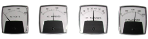

This condition suggests that there is a suspected failure in the primary voltage metering system. This condition is very unlikely to be related to the precipitator. It is more likely to be related to the performance of the electrical equipment. It is reasonable at this stage to assume that this indication is not affecting the performance of the Precipitator. Other potential side effects are: Failure of the control to correctly determine a true under voltage condition. Failure of the control to correctly limit its output to a preset primary voltage level.
The primary voltage measured on the system may be displayed in two locations. You may have one or both of the following: